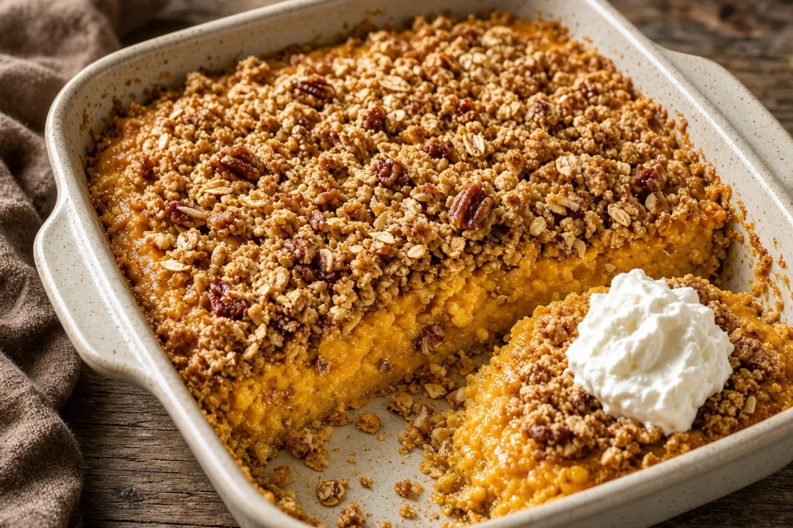

Sweet Potato–Style Pumpkin Crumble
Crustless pumpkin custard with browned butter, vanilla, and a gentle cinnamon-nutmeg spice that eats like sweet potato pie, under a crunchy oat-pecan crumble. Make-ahead friendly for Thanksgiving.

9 servings
By
Yield: 9 servings
Prep:
Cook:
Cool: 1 hour (not counted in the total)
Total:
Difficulty: Easy
Ingredients
Filling
- 1 can (15 oz) pumpkin purée (not pie filling), or butternut squash purée
- 4 tablespoons butter, browned and cooled 5 minutes
- 1 can (5 oz) evaporated milk
- 3 large eggs
- 1/3 cup packed brown sugar, for the filling
- 1/3 cup granulated sugar
- 2 teaspoons vanilla
- 1 teaspoon cinnamon, for the filling
- 1/2 teaspoon nutmeg
- 1 pinch ground ginger
- 1/2 teaspoon salt, for the filling
- 1/2 teaspoon lemon zest, or 1 tablespoon bourbon
Crumble
- 3/4 cup all-purpose flour
- 3/4 cup old-fashioned oats
- 1/2 cup packed brown sugar, for the crumble
- 1/2 cup chopped pecans
- 1/2 teaspoon cinnamon, for the crumble
- 1/4 teaspoon salt, for the crumble
- 1/2 cup (1 stick) cold butter, cubed
Instructions
- Spoon the pumpkin purée into a fine strainer over a bowl and drain 15 minutes. Heat the oven to 350°F and butter a 9x9-inch or 2-quart baking dish.
- Melt the 4 tablespoons butter in a small pan over medium heat, swirling, 3 to 5 minutes, until golden brown and nutty. Pour into a large bowl and cool 5 minutes.
- Whisk the drained pumpkin, evaporated milk, eggs, both sugars, vanilla, cinnamon, nutmeg, ginger, salt, and lemon zest or bourbon into the browned butter until smooth, 2 minutes. Pour into the dish and spread evenly (a little under 1 inch deep in a 9x9-inch dish).
- Bake at 350°F for 15 to 20 minutes, until the edges are set but the center is still loose.
- Meanwhile, mix the flour, oats, brown sugar, pecans, cinnamon, and salt. Rub in the cold butter until pea-size clumps form. Chill the crumble while the filling bakes.
- Scatter the crumble evenly over the filling. Bake 20 to 30 minutes more, checking at 20 minutes, until the topping is golden, the center barely jiggles, it reads 175°F, and a knife 1 inch from the center comes out clean. If the center still sloshes or is under 175°F, bake 5 minutes more.
- Cool at least 1 hour so the filling sets. Serve warm or cold with whipped cream.
Notes: It tastes like sweet potato pie because of the browned butter, the extra vanilla, a lighter spice (cinnamon, nutmeg, and just a pinch of ginger — no cloves or allspice), a denser filling, and half white sugar. Make ahead: bake Wednesday, cover and refrigerate, then warm at 300°F for 15 minutes. In an 8x8-inch dish, add about 5 minutes to each bake. Butternut squash purée gets even closer to sweet potato.